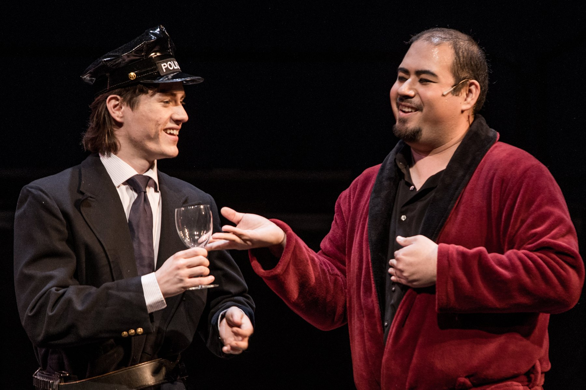
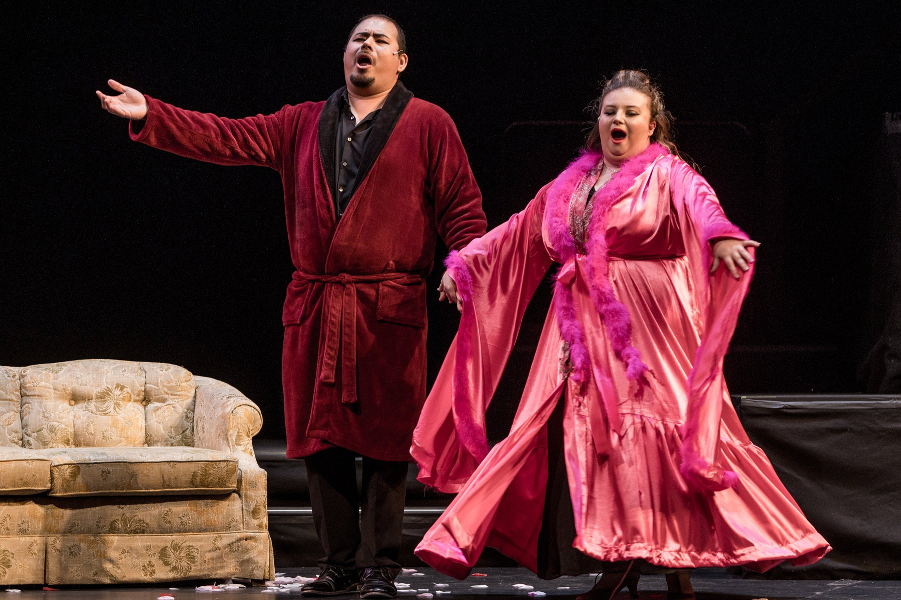
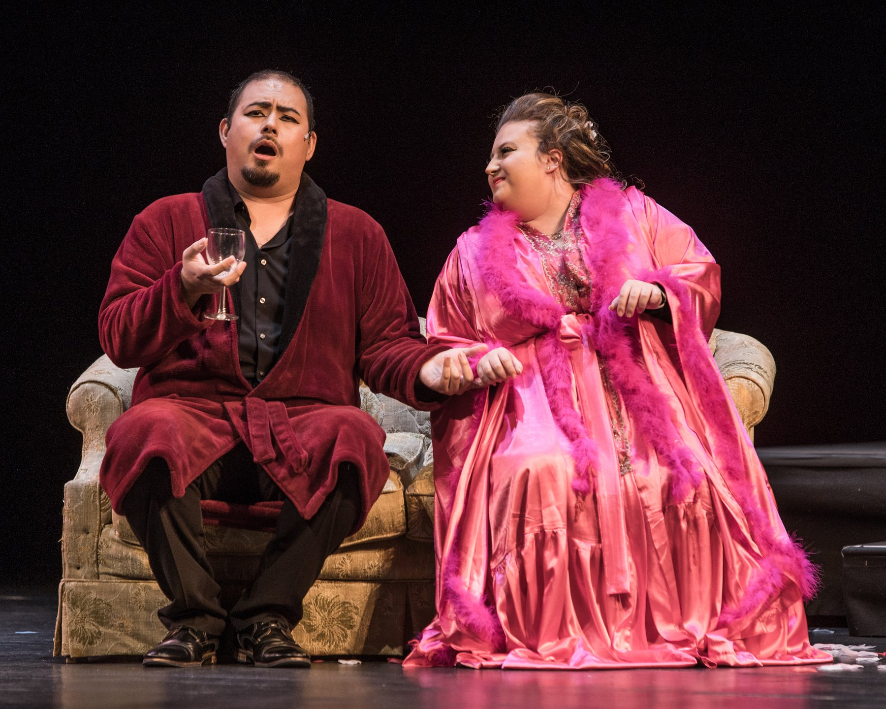
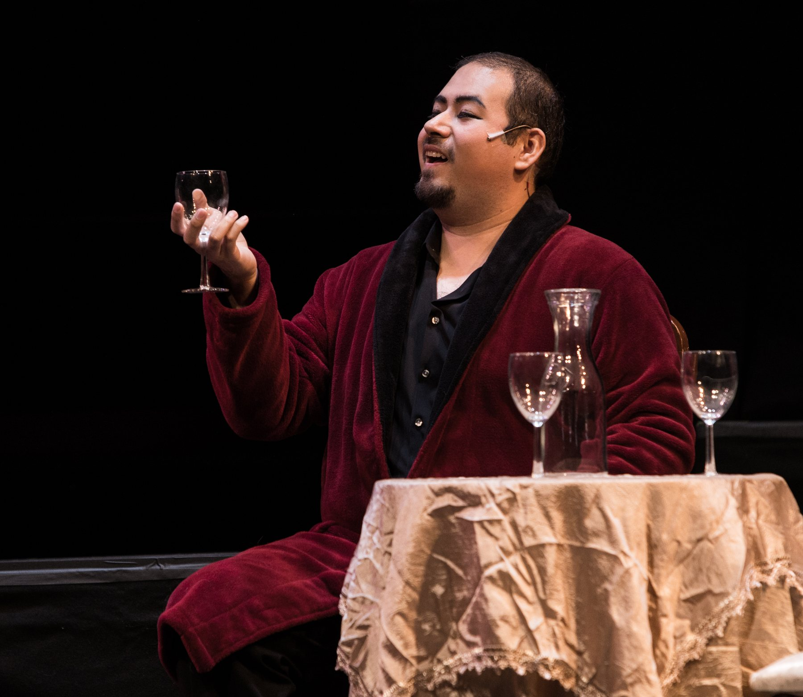
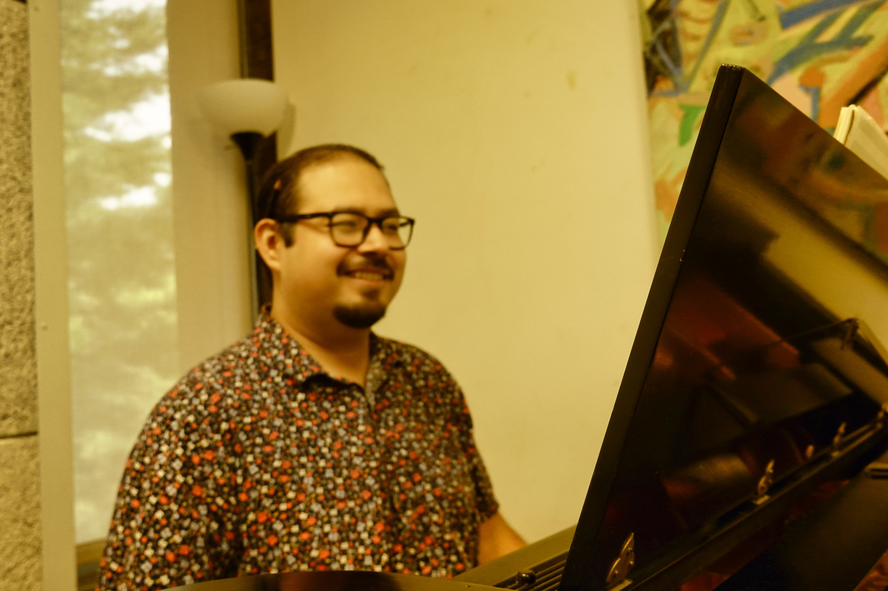
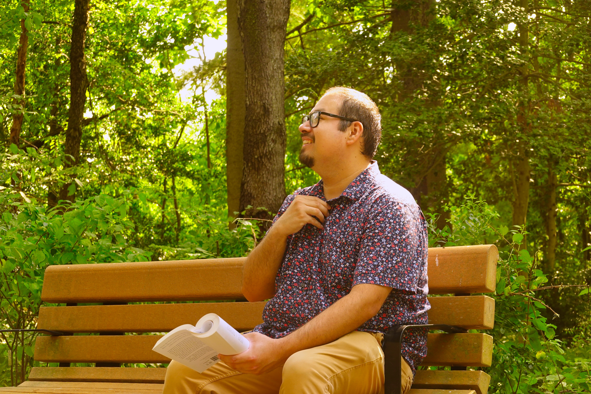

My YouTube Channel
Hello friends! My name is Arturo (I like to go by Art), and I'm an aspiring vocalist, composer, and conductor. My passions include: diversity and inclusion, interfaith dialogue, and serving others through music and advocacy.
Vocal materials
Hello friends! My name is Arturo (I like to go by Art), and I'm an aspiring vocalist, composer, and conductor. My passions include: diversity and inclusion, interfaith dialogue, and serving others through music and advocacy.
On the channel
Vocal Demo Reels
Video pending
YouTube upload
Video pending
YouTube upload
Opera & Choral






